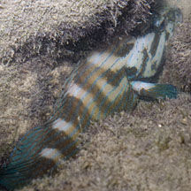
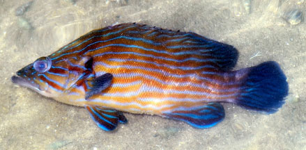
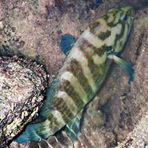
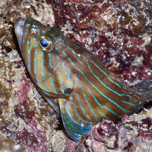
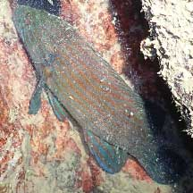
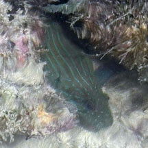

|
|
| fishes text index | photo index |
| Phylum Chordata > Subphylum Vertebrata > fishes > Family Serranidae |
| Bluelined
hind Cephalopholis formosa Family Serranidae updated Oct 2020 Where seen? This rather large fish with bright blue narrow lines is sometimes near our seawalls. It is said to prefer shallow dead or silty reefs. Features: To about 30cm. The fish is distinguished by by narrow blue stripes on head, body and fins. All fins also blue. Body dark brown to yellowish brown. Those seen pale, sometimes with light or dark brown bars: are these its 'night colours'? |
 Tanah Merah, Jun 12 |
 Tanah Merah Ferry Terminal, Nov 25 Photo shared by Loh Kok Sheng on facebook. |
| Bluelined hind on Singapore shores |
On wildsingapore
flickr
|
| Other sightings on Singapore shores |
 East Coast Park, May 15 Photo shared by Loh Kok Sheng on flickr. |
 East Coast Park, May 17 Photo shared by Loh Kok Sheng on facebook, |
 East Coast Park-Marina East, May 22 Photo shared by Kelvin Yong on facebook, |
 St John's Island, Oct 25 Photo shared by Lon Voon Ong on facebook. |
Links
|